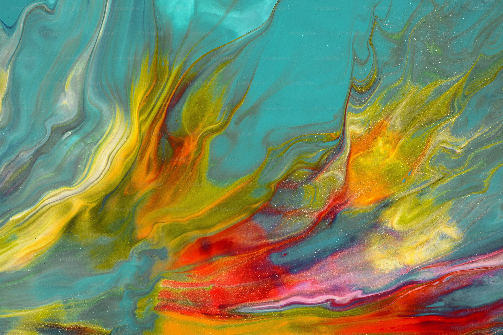

Небо після Бурі
10 жовтня 2024
Картина зображає спокійне небо після бурхливої бурі. М'які кольори та тонка гра світла підкреслюють тендітність природи та її здатність до відновлення.

Природа та Спокій
14 вересня 2024
Ця композиція розповідає про красу гірських заходів сонця, де спокій та велич природних ландшафтів гармонійно поєднуються, створюючи атмосферу роздумів і натхнення.

Абстрактна Енергія
22 серпня 2024
Сучасна абстракція, що передає динаміку кольору та руху. Кожна лінія та пляма на полотні взаємодіють, створюючи відчуття енергії та життя.